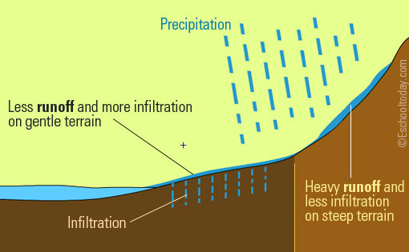

When water falls back to earth as precipitation,
it may fall back in the oceans, lakes or rivers or it may end up on land.
When it ends up on land, it will either soak into the earth and become part of the “ground water” that plants and animals use to drink or it may run over the soil and collect in the oceans,
lakes or rivers where the cycle starts all over again.
